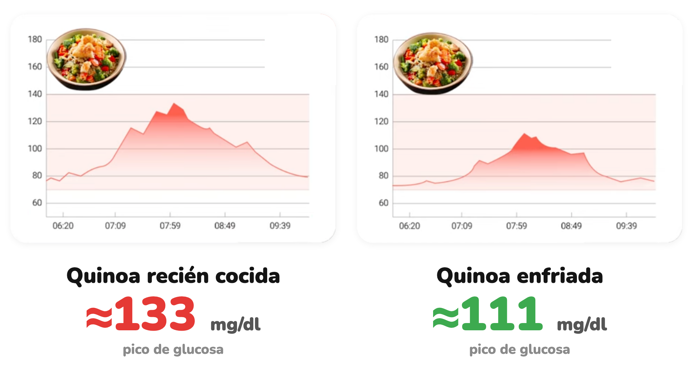

Cómo afecta
Misma quinoa. Distinta curva.
Recién cocida o después de una noche en la nevera: tu glucosa lo nota.
Desliza →
Hacemos visible lo invisible
Recién cocida o después de una noche en la nevera: tu glucosa lo nota.
Desliza →

Curvas observadas en registros reales; picos leídos en la gráfica. La respuesta puede variar entre personas.
Pequeños cambios en cómo preparas tus platos marcan la diferencia.
Desliza →
glucovibes.com